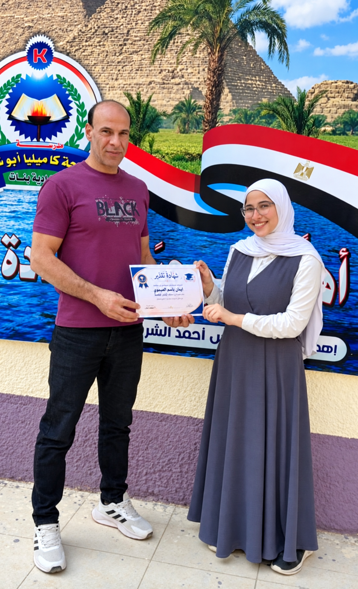

صاحبة المشروع
إيمان باسم العيسوي
مشروعي الرقمي لمدرستي
البيانات الدراسية
- المدرسة
- الحاجه كاميليا أبو شتية
- الإدارة التعليمية
- إدارة منية النصر التعليمية
- المحافظة
- الدقهلية
- المادة
- تكنولوجيا المعلومات والاتصالات
تصميم صفحات ويب باللغة العربية باستخدام HTML وCSS، لعرض بيانات مدرستي ومهاراتي الرقمية.

المهارات الرقمية في المشروع
- استخدام الحاسب الآليإنشاء الملفات وتنظيمها في مجلد واحد
- إنشاء صفحات الويبترتيب النصوص والصور والروابط
- كتابة HTMLبناء العناوين والأقسام والقوائم
- التنسيق باستخدام CSSتوحيد الألوان والخطوط والمسافات